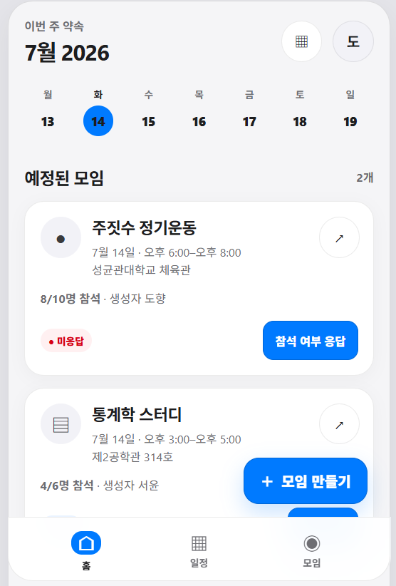
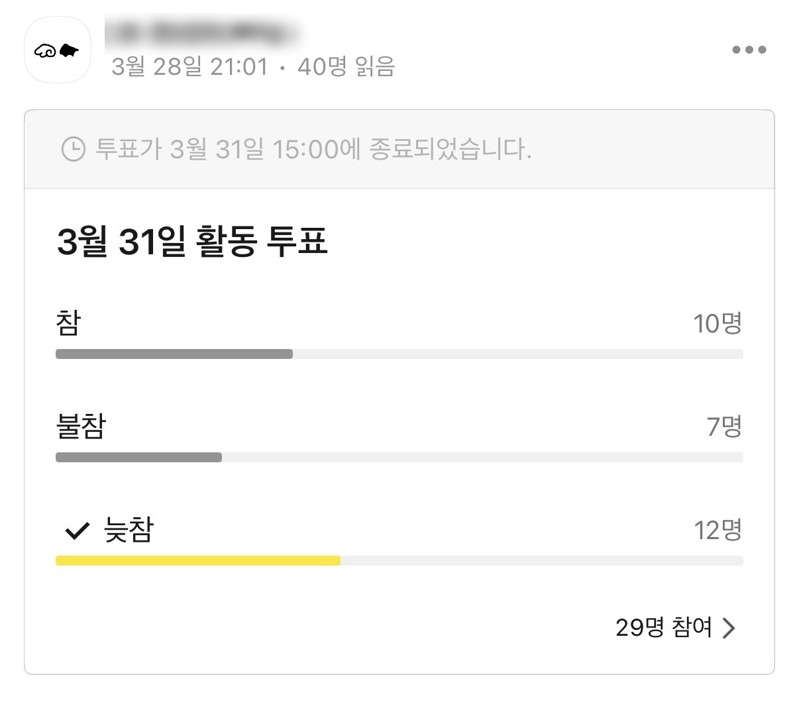
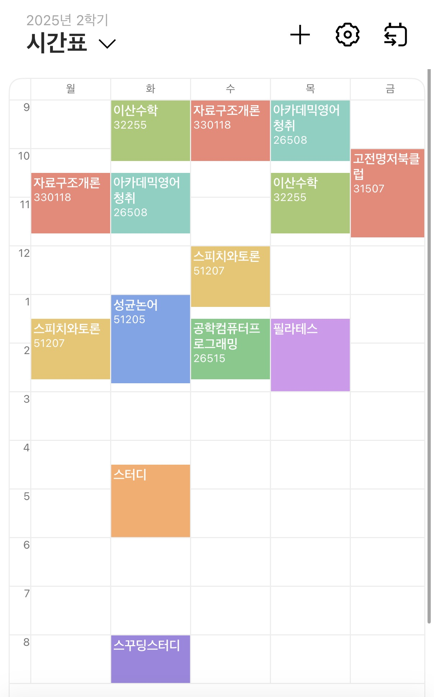

팀원의 실제 경험: 웹개발 동아리에서 프론트엔드·백엔드·인프라·기획 4개 팀의 회의를 잡으려면, 팀별 최소 참석 인원을 맞춰 매번 시간을 조율해야 했습니다.
내가 참여 가능한 시간은 그대로인데, 모임이 바뀔 때마다 다시 확인하고 다시 알려야 했습니다.
같은 문제를 겪은 소프트웨어학과 개발자 2명과 통계학과 1명이, SPARK에서 실제 작동하는 서비스로 검증하고, 실제로 서비스를 배포하기 위해 모였습니다.

투표 올리기 → 취합 → 미응답자 챙기기를 모임마다 반복하는 운영 피로.
| 최종 확정까지 | 몇 시간 이내 | 하루 | 2~3일 | 일주일 이상 |
|---|---|---|---|---|
| 응답 인원 | 13명 | 18명 | 10명 | 4명 |
그 외 “흐지부지 끝난 적이 많다” 2명 — 자체 설문 N=47 [3]
조율할 관계 자체가 없고, 시간과 관심사가 맞는 사람을 만날 접점이 구조적으로 부족.
고립·은둔 위험 청년 최대 약 54만 명 추정 (보건복지부, 2023) — 관계망이 옅어지는 초기에 접점을 만드는 예방적 접근
총무의 48시간을 10분으로 — 투표·취합·리마인드를 자동화
시간이 맞는 사람을 먼저 제안 — 관심사·공강 기반
사용자의 시간표를 저장해 두고, 모임 조율(축1)과 관계 형성(축2)을 같은 데이터 기반 위에서 해결하는 AI 네이티브 플랫폼
6개월 내 성균관대 MVP 검증 — 베타 사용자 300명, 동아리 20팀 온보딩, 기대 전환율 68% (자체 설문 47명 기반)
기존 도구는 매번 입력을 요구합니다. 모여봐는 한 번 저장한 시간표로 조율과 매칭을 동시에 처리하는 유일한 구조입니다.
모델 선택 — 멀티모달 LLM API(비전 + structured output, 스키마 서버 검증) + rule-based scoring · 인식 결과는 사용자가 최종 검수해 오류를 줄입니다
“이번 주 목요일 오후 6시에 혜화에서 뒤풀이 열어줘. 운영진은 필수 참석이고 최대 10명이야.” → 폼 자동 완성
10명의 30분 단위 가능 시간을 실시간 계산, Top 3와 추천 이유 제시 — “10명 중 9명 참석 가능, 필수 참석자 전원 가능”
원클릭 확정 → 참석/불참/미정 현황 → 미응답자만 골라 리마인드
결원 발생 시 공강·관심사·이동시간이 맞는 후보에게 자동 제안 → 정원 복구
nana3851.github.io/moyeobwa-slides
⚠ 임시 링크 — moyeobwa-demo 배포 후 실제 데모 주소로 교체 필요
일반형 Score(t) = Σ wᵢ · availᵢ,ₜ — 가중치: 필수 참석 · 운영진 · 선호도 · 이동 시간 (데모에 실제 구현된 계산식)
Rule-based scoring — 콜드스타트 없음: 시간표만 있으면 즉시 작동
데이터 축적 — 베타 기간 참석·응답·채택 로그 수집
ML 고도화 — 참석률 예측 · 개인화 리마인드 (통계학과 팀원 리드)
| 개발 Item | 개발 내용 |
|---|---|
| ① 프론트엔드 | 모바일 웹앱 — 검증된 데모 UI 기반 |
| ② 백엔드 / API | 모임·참여자·응답·리마인드 REST API, 학교 이메일 인증 |
| ③ AI 모듈 | 시간표 캡처 인식 + 자연어 모임 생성(structured output) + 공지 자동 작성 |
성균관대 재학생 25,399명
동아리 · 학회 · 스터디 운영진
베타 300명 · 동아리 20팀
축1 카톡 투표로 이미 존재하는 조율 수요를 AI로 자동화 — 기존 시장 재정의
축2 돈을 쓰지 않던 관계 형성 수요를 창출 — 신규 시장 창출
고립·은둔 위험 청년 최대 약 54만 명 (보건복지부 2023) · 대학생 125명 연구 — 사회참여가 정신건강·시간관리와 유의미한 관계 (2024)
“모임 시간이 바뀔 때마다 다시 알려야 했다” · “친구 시간표를 확인하고 개별 연락하는 것 자체가 일이었다”
성균관대 검증 → 교내 전 모임 → 캠퍼스 간 매칭 → 타 대학
| 서비스 | 겹치는 기능 | 한계 |
|---|---|---|
| 에브리타임 | 시간표 등록·조회 | 조율·매칭 기능 없음 · 공식 API·제휴 부재로 연동 제약 |
| 카카오톡 투표·캘린더 | 일정 취합 | 매번 수동 투표와 응답 대기 — “운영 피로” 그 자체 |
| When2meet | 다자간 시간 조율 | 매번 가능 시간 직접 입력 · 저장된 시간표 기반 자동 계산 없음 |
| 대학생 친목·소개팅 앱 | 새로운 관계 형성 | 시간 데이터가 없어 “만남 시간”을 제안 못 함 |
각 서비스는 조율 또는 매칭 중 하나만,
그것도 매번 새로 입력을 요구합니다.
모여봐는 저장된 시간표 위에서 둘을 동시에 해결합니다.


실제 사용 화면 — 카카오톡 투표 · 에브리타임 시간표일정 인원 이상 · 프리미엄 기능(매칭 확장, 고급 리마인드) 사용 시
동아리연합회 등 상위 단체가 결제하면 소속 동아리 전체 무료 · 규모별 차등
구독제 · 일일 체험권 · 정기권 및 대관 결제 대행 수수료 (체육관 등)
교내 동아리 3~5팀 · 학생 100명 클로즈드 베타 — 추천·리마인드·인식 가설 측정
시간표 기반 일정 조율·매칭 워크플로우 국내 특허 출원 검토
베타 검증 후 예비창업패키지 연계 및 개인사업자 등록 검토
| No | 성명 | 소속(학과) | 학년 | 학번 | 역할 |
|---|---|---|---|---|---|
| 1 | 김나현 (대표자) | 소프트웨어학과 | 2 | 25학번 | 팀장 · AI 파이프라인·백엔드 총괄 |
| 2 | 이도향 | 통계학과 | 2 | 24학번 | 프로젝트 리더 · 알고리즘 개발 |
| 3 | 정보라 | 소프트웨어학과 | 3 | 24학번 | 프론트엔드·앱 개발 · 배포 및 관리 |
계산은 알고리즘이 정직한 선택. 그러나 이미지·자연어 입력의 이해와 맥락에 맞는 문장 생성은 AI 없이 불가능 — 파이프라인의 전후 단계가 AI의 자리.
익명 커뮤니티와 실명 조율·매칭은 상충. 운영진 워크플로우 락인으로 선점하고, API 부재는 역으로 우리의 독립성.
Rule-based 추천은 시간표만 있으면 즉시 작동. ML은 베타에서 데이터가 쌓인 뒤 단계적으로 도입.
시간표 원본은 비공개, 타인에게는 “가능/불가능”만 노출. 학교 이메일 인증, 캡처 원본 미보관 원칙.
동아리연합회 B2B2C — 예산 보유 주체가 과금하고 소속 동아리는 무료로 확산 속도 확보. 개인 과금은 프리미엄 기능부터 단계적으로.
학교 이메일 인증 · 신고·차단 · 공개 장소 권장 · 프로필 공개 범위 설정 · 모임 종료 후 상호 평가.